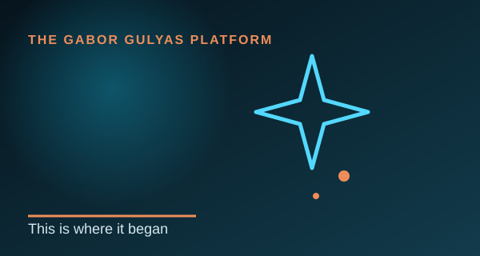
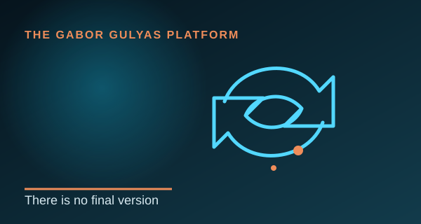
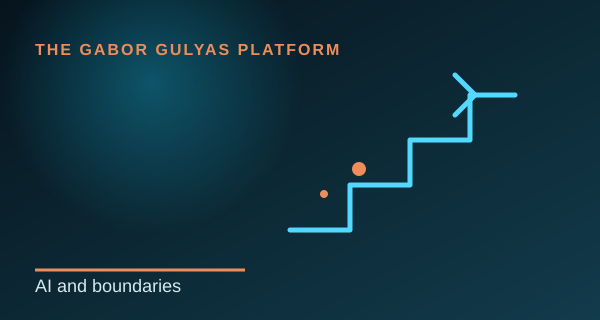
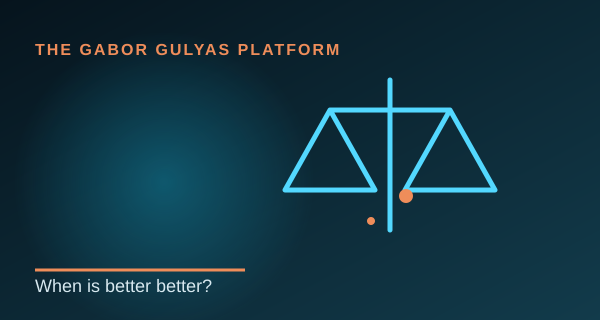
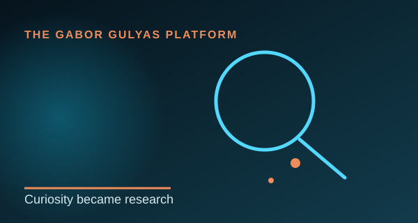
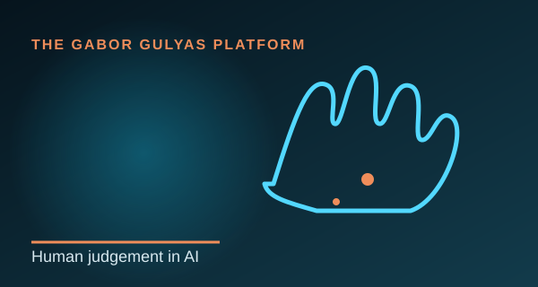

Personal observations on AI, organisations, learning and becoming a researcher. These are clearly separated from working papers and formal publications.
Explore
Personal posts and research reflections.
A visible path from personal thought to professional post, working paper and eventual publication.
AI and leadership
Maybe We’ve Been Asking the Wrong Question
29 July 2026 · 5 min read
The important question may not be which AI is best, but when it is good enough to create real value.
Read more →
This post explores the difference between technical performance and organisational value.
One idea has been on my mind for weeks.
Every day, a new AI model is released. Faster. Smarter. More capable. And every time, the same question appears: ‘What’s the best AI?’ I’m no longer sure that’s the right question.
Maybe the better question is: when is it good enough to create real value? There will probably never be a final version of AI. Every version can be improved, every prompt refined and every workflow optimised.
But organisations do not succeed because they always have the newest technology. They succeed because they know when technology is good enough to solve a real problem.
A 2% improvement might require 50% more time. A slightly better solution might cost significantly more to implement. Sometimes, chasing perfection creates less value than delivering a solution that already works.
The more I read, the more I believe that AI is not changing one thing. It is forcing us to rethink how we make decisions. Not every improvement is worth pursuing, and not every possibility creates value.
That may be where leadership becomes more important than technology. One of the biggest challenges of the AI era may not be building better AI, but knowing when to stop improving it and start creating value with it.
When do you think ‘better’ becomes ‘good enough’?
Connection to my research
The idea connects directly to the Capability-to-Value Model: AI does not create sustainable value by itself. Leadership decisions, organisational readiness, learning and capability integration determine whether technical potential becomes practical value.

Personal story
This is where it all began
25 July 2026 · 4 min read
How curiosity across different careers became a research direction.
Read more →
If someone had told me ten years ago that one day I would be writing academic papers and preparing for doctoral study, I probably would have smiled.
Healthcare, business, operations, technology and public service looked like separate careers. In reality, each one taught me to ask how systems work and why similar organisations achieve different outcomes.
University gave that curiosity direction. The questions eventually became more interesting than the answers.
Why I publish these reflections
These posts capture ideas while they are still developing. They are not presented as finished academic findings, but as a transparent record of the questions shaping my research journey.
From reflection to evidence
Strong ideas can later develop into working papers, research questions or empirical studies. The distinction between reflection and formal evidence remains clear throughout the platform.
Key takeaway
The importance of “This is where it all began” lies in how it connects lived experience with a wider question about organisations, people and sustainable value creation.

AI reflection
There is no final version with AI
Draft post · 3 min read
Every version can be improved—but improvement has a cost.
Read more →
With AI, there is rarely a final version. There is almost always a better prompt, stronger structure or clearer output.
But organisations cannot improve forever without considering time, cost and purpose. The real question is not whether a version can be better, but whether the next improvement creates enough value to justify the effort.
Why I publish these reflections
These posts capture ideas while they are still developing. They are not presented as finished academic findings, but as a transparent record of the questions shaping my research journey.
From reflection to evidence
Strong ideas can later develop into working papers, research questions or empirical studies. The distinction between reflection and formal evidence remains clear throughout the platform.
Key takeaway
The importance of “There is no final version with AI” lies in how it connects lived experience with a wider question about organisations, people and sustainable value creation.

Organisational thinking
AI can think without boundaries. Organisations cannot.
Draft post · 3 min read
Creative exploration still needs direction, sequencing and constraints.
Read more →
AI can jump across ideas quickly. That can be powerful, but organisations still need to preserve what is required for the next step.
Without boundaries, we may skip the right move, lose context or optimise the wrong problem. Good leadership does not stop exploration; it creates useful direction.
Why I publish these reflections
These posts capture ideas while they are still developing. They are not presented as finished academic findings, but as a transparent record of the questions shaping my research journey.
From reflection to evidence
Strong ideas can later develop into working papers, research questions or empirical studies. The distinction between reflection and formal evidence remains clear throughout the platform.
Key takeaway
The importance of “AI can think without boundaries. Organisations cannot.” lies in how it connects lived experience with a wider question about organisations, people and sustainable value creation.

Value question
When is better actually better?
Draft post · 3 min read
More capability is not automatically more value.
Read more →
We often assume that more features, more automation and more sophistication must be better.
But better for whom? At what cost? And does the additional capability solve the problem that matters? Sustainable value requires selection, not only improvement.
Why I publish these reflections
These posts capture ideas while they are still developing. They are not presented as finished academic findings, but as a transparent record of the questions shaping my research journey.
From reflection to evidence
Strong ideas can later develop into working papers, research questions or empirical studies. The distinction between reflection and formal evidence remains clear throughout the platform.
Key takeaway
The importance of “When is better actually better?” lies in how it connects lived experience with a wider question about organisations, people and sustainable value creation.

Research journey
Curiosity became research
Draft post · 4 min read
A personal reflection on moving from practical questions to structured inquiry.
Read more →
I was never satisfied with “because that is how it is.” Every answer created another question.
Research did not replace practical experience. It gave that experience a method, a language and a way to test what I thought I knew.
Why I publish these reflections
These posts capture ideas while they are still developing. They are not presented as finished academic findings, but as a transparent record of the questions shaping my research journey.
From reflection to evidence
Strong ideas can later develop into working papers, research questions or empirical studies. The distinction between reflection and formal evidence remains clear throughout the platform.
Key takeaway
The importance of “Curiosity became research” lies in how it connects lived experience with a wider question about organisations, people and sustainable value creation.

Responsible AI
Human judgement remains part of the system
Draft post · 3 min read
AI supports decisions; accountability stays human.
Read more →
An AI tool may recommend, summarise or generate, but people still define the objective, evaluate the evidence and carry responsibility for the outcome.
Responsible adoption therefore depends not only on technical safeguards, but also on leadership, organisational learning and human judgement.
Why I publish these reflections
These posts capture ideas while they are still developing. They are not presented as finished academic findings, but as a transparent record of the questions shaping my research journey.
From reflection to evidence
Strong ideas can later develop into working papers, research questions or empirical studies. The distinction between reflection and formal evidence remains clear throughout the platform.
Key takeaway
The importance of “Human judgement remains part of the system” lies in how it connects lived experience with a wider question about organisations, people and sustainable value creation.